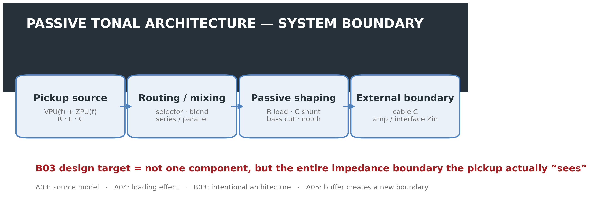
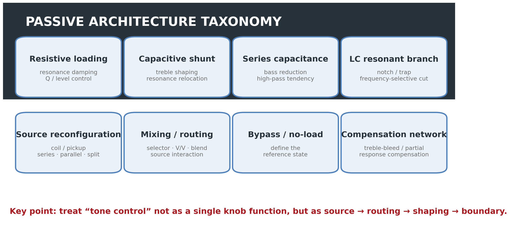
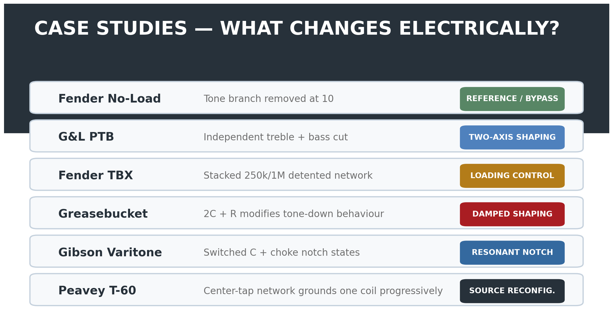
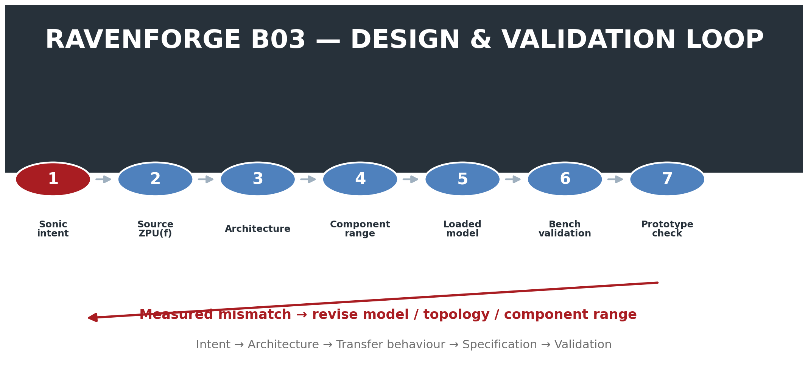

RAVENFORGE / DESIGN METHODOLOGY RESEARCH LOG — B03
RAVENFORGE
Design Methodology Research Log
B03 — Passive Tonal Architecture
Designing a passive tone system through loading · filtering · routing · reference state rather than component-value recipes
Document purpose |
Code | B03 |
|---|---|
Focus | passive tonal architecture · controlled loading · filtering · source reconfiguration · routing · reference state |
Evidence | JAES pickup modeling · circuit theory · manufacturer service documentation · patent / historical implementation |
RavenForge link | B02 sonic intent → passive architecture → measurable response → component specification |
Upstream logs | B02 · A03 · A04 · A05 |
Downstream logs | C02 (experiment pending) · A06 · B06 · A08/C05 · A09/C06 |
Status | Literature / technical verification complete · architecture framework established · prototype measurement pending |

Figure 1. B03 system boundary. The design target of a passive circuit is not a single tone capacitor, but the entire loaded system from the pickup source to the external input.
1. Research Question — Why are passive electronics an architectural problem rather than a component-value choice?
Passive instrument circuits are often reduced to choices such as “250 kΩ or 500 kΩ” and “0.022 µF or 0.047 µF.” A magnetic pickup, however, is not a zero-impedance voltage source. It is a frequency-dependent source with R, L, and winding/self capacitance, while external pots, capacitors, cable, and amplifier input jointly alter its resonance and damping.
The same capacitor therefore cannot be expected to produce the same response when pickup inductance, coil resistance, self capacitance, control position, cable capacitance, or downstream input impedance changes. B03 does not ask “which component is best?” but rather “what impedance boundary should the pickup see in order to achieve the intended musical operation?”
B03 Core Position |
2. Boundary Between A03–A05 and B03 — From explaining effects to designing structure
Log | Core question | Relationship to B03 |
|---|---|---|
A03 | What are the pickup’s own RLC / ZPU(f)? | source model |
A04 | How does external R/C loading change response? | loading mechanism |
A05 | How does a buffer separate source from downstream load? | new electrical boundary |
B03 | How should that load and routing be arranged intentionally? | design architecture |
Where A04 explains the consequences of loading, B03 treats loading as a design variable. Conventional tone, no-load, bass-cut, notch, pickup series/parallel, blend, and source reconfiguration are therefore classified not as unrelated component combinations, but as different electrical operations.
3. Basic Circuit Model — A simple RC cutoff model is not sufficient
As a first-order approximation, the pickup can be represented by a source voltage VPU(f) and a frequency-dependent source impedance ZPU(f). If the external network is represented as ZLOAD(f), the output follows a voltage-divider relation of the following form.
First-order loaded-source relation |
Because ZPU(f) itself is shaped by coil resistance, inductance, and self/distributed capacitance, a conventional tone capacitor cannot be treated as an isolated first-order RC low-pass. The tone branch, cable capacitance, volume pot, and input resistance simultaneously alter pickup resonance frequency and damping. The JAES model by Paiva, Pakarinen, and Välimäki likewise treats linear resonant filtering and multiple-pickup mixing as core elements of magnetic-pickup behaviour [1].
A simplified tone branch is a frequency-dependent shunt to ground consisting of a capacitor and tone resistance in series. As tone resistance decreases, the capacitor couples more strongly to the source, and a new lower-frequency resonance may emerge through interaction with pickup inductance. However, no universal rule states that lowering the tone control must always raise or lower Q. Q and peak height depend on the complete damping condition.

Figure 2. Example response of a simplified RLC model. This is a conceptual simulation, not measured pickup data; it illustrates why the effect of a tone capacitor cannot be represented by one independent RC cutoff.
4. Passive Tonal Architecture — Basic topology taxonomy

Figure 3. B03 topology taxonomy. Compensation networks such as treble-bleed are included within tonal architecture, but any claim that they “preserve” the original source tone requires a defined reference state and validation conditions.
The deeper review indicates that one additional category is useful. A treble-bleed or partial-compensation network that offsets high-frequency loss during volume reduction is an important source-loading architecture and is therefore treated as a separate “compensation network” category. Conversely, not every switching function is treated as a tone circuit; B03 includes switching only when it actually changes source impedance or filtering.
5. Conventional Volume/Tone — More than a “treble-cut knob”
A conventional tone control adds a shunt path at the pickup output using a capacitor and variable resistance. As the control is lowered, the capacitor is coupled more directly to ground and high-frequency energy is reduced. Because the pickup is an inductive source, however, the result is not an isolated first-order low-pass but a resonant network formed by the pickup RLC and the external C/R load.
Practices such as “0.022 µF = humbucker” and “0.047 µF = single coil” may be useful starting points, but they are not design laws. In B03, capacitor value is specified together with source ZPU(f), load resistance, cable capacitance, and the intended endpoint response.
B03 Design Rule 01 |
6. Reference State — Full-up tone and true bypass are not the same state
Even at the maximum position of a conventional tone pot, its finite resistance and capacitor branch may remain in the circuit. Fender’s 250K No-Load potentiometer is a manufacturer-documented example of this distinction: Fender states that positions 1–9 operate as a conventional tone control, while at 10 the tone control is removed from the circuit [2].
B03 therefore does not define a “reference state” by knob marking alone. The actual connection state must be recorded: standard tone full-up, no-load detent, switch bypass, Varitone position 1, and so on.
B03 Design Rule 02 |
7. Passive Bass Cut — A second axis demonstrated by G&L PTB
A passive network need not reduce treble only. G&L officially defines P.T.B. as Passive Treble & Bass Controls and states that two tone controls can independently cut treble and bass frequencies [3].
A generic passive bass-cut can be implemented as a high-pass-like network by introducing series capacitance into the signal path and controlling its effect with resistance. The actual turnover, however, is not determined by the capacitor alone. Pickup source impedance and downstream load interact with it, so “C value = cutoff” is not a valid stand-alone rule. Likewise, the maximum control position should not be called a true bypass unless the actual production schematic confirms it.
8. Fender TBX — Separating manufacturer language from circuit interpretation
According to Fender’s official description, TBX is a stacked and detented 250K/1Meg potentiometer. Positions 1–5 operate like a standard tone control; above the detent, resistance behaviour changes and Fender describes more bass, treble, presence, and output reaching the amplifier [4].
This “increased output” must not be translated into active gain. TBX contains no battery or powered gain stage and therefore provides no active power gain. Its exact frequency response and loading behaviour must be interpreted from the Fender wiring arrangement together with pickup and load conditions; simplified claims such as “positions 6–10 always present a lower impedance to the pickup” should also be avoided.
Passive “boost” wording |
9. Fender Greasebucket — Not a push/pull circuit, but a 2C + R tone network
The earlier deep-research draft described Greasebucket as being switched on and off by push/pull; that is not a required element of the standard Greasebucket topology and is removed here. Fender’s American Special service diagram explicitly shows a 0.100 µF capacitor, a 0.02 µF capacitor, and a 4.7 kΩ resistor arranged around the tone control [5].
Fender’s marketing language states the design goal as rolling off highs without “adding” bass as the tone is reduced. Circuit-wise, the safer interpretation is that the 0.1 µF capacitor together with the 0.022 µF + 4.7 kΩ network modifies the endpoint resonance and damping relative to a standard tone circuit. Calling it simply a band-pass filter that cuts highs and lows in a fixed ratio is also too reductive. The actual curve must be simulated or measured under defined source/load conditions.
10. Gibson Varitone — Switched resonant-notch architecture
Gibson’s official archival description identifies the Varitone as a notch filter. Position 1 is true bypass, while positions 2–6 select capacitors that remove specific frequency regions. The traditional configuration is described with a 1.5 H choke and capacitor states such as 1000 pF, 3000 pF, 0.01 µF, 0.03 µF, and 0.22 µF [6].
The ideal LC resonance can be approximated as f0 ≈ 1 / (2π√LC), but actual notch depth, Q, and insertion loss depend on inductor winding resistance, capacitor tolerance, pickup impedance, and volume/load conditions. It is therefore more accurate to treat the Varitone as a system-dependent notch network than to assign a fixed frequency to a given switch position.
11. Peavey T-60 — A case where the tone control changes source topology
US Patent 4,164,163 describes a circuit that uses a center-tapped dual-coil pickup together with a capacitor/potentiometer network to change the pickup’s resonant frequency [7]. According to the patent description, the full-bass position operates as a full double-coil humbucking pickup with a lower resonant frequency; as the control moves toward treble, one coil is progressively grounded and the resonant frequency rises. At the extreme treble setting, the source approaches a single-coil state.
The important point is that “tone control = filter after the pickup” is not always a valid assumption. A single control can alter source topology and frequency response at the same time. A generalized electrical analysis of coil series/parallel/split configurations is nevertheless reserved for A08/C05.
12. Pickup Mixing — Not simple voltage summing
Connecting two pickups is not equivalent to ideally summing two independent tracks. Each pickup has a finite, frequency-dependent source impedance, so selector, dual-volume, blend, and master-tone networks can make the pickups and shared load interact. The Paiva et al. model includes multiple pickups and series/parallel connection [1].
Under a simplified approximation of two identical coils with negligible mutual coupling, series connection increases R and L, while parallel connection lowers equivalent R/L. Real pickups, however, differ in physical position, winding, distributed capacitance, and magnetic coupling, so those simple equivalents should not be applied universally. B03 therefore prefers measuring actual Z(f) and loaded response over shorthand claims such as “series is always darker / parallel is always brighter.”
13. Case Study Map — Brand circuits are architectural examples, not answers

Figure 4. Classification of the verified cases by electrical operation. These brand circuits are not ranked against one another; they are used as evidence that different passive operations have been implemented in real production or patented systems.
Case | Primary operation | Reference state | Evidence level |
|---|---|---|---|
Fender No-Load | tone branch removal | 10 = branch removed | Strong / official |
G&L PTB | independent treble/bass cut | model-specific | Strong / official function |
Fender TBX | stacked detented loading network | 5 = center detent | Strong / official function; transfer needs circuit analysis |
Greasebucket | modified tone-down damping / shaping | standard full-up remains loaded | Strong topology / official service diagram |
Gibson Varitone | switched resonant notch | position 1 = true bypass | Strong / official archival |
Peavey T-60 | progressive coil grounding + resonance shift | full humbucker ↔ near single-coil | Strong / patent |
14. Capacitor Type — Separating electrical parameters from marketing identity
B03 evaluates a capacitor first by capacitance, tolerance, leakage, ESR, parasitic behaviour, stability, and physical reliability. Names such as “PIO,” “Orange Drop,” “Vitamin Q,” and “ceramic” are not treated as independent tone parameters.
AES research on capacitor non-idealities and distortion exists, but results obtained in conditions such as loudspeaker crossovers or DC-biased preamps cannot automatically be generalized to passive guitar-pickup networks operating at tens to hundreds of millivolts. Claims of dielectric or brand superiority in passive guitar circuits therefore require controlled electrical and level-matched comparisons with capacitance and tolerance held constant.
RavenForge component rule |
15. Control Law and Tolerance — Do not record nominal value alone
Even two 250 kΩ pots can produce different relationships between knob position and electrical state when taper, actual end-to-end resistance, and wiper law differ. Capacitor tolerance can likewise shift resonance or notch position. B03 specifications therefore record measured value, tolerance, taper, and reference position in addition to nominal value.
Variable | Recorded item | Design consequence |
|---|---|---|
Potentiometer | actual resistance · taper · wiper position | loading · control law · endpoint |
Capacitor | measured C · tolerance | resonance / notch / transition |
Inductor | L · winding R · tolerance | notch frequency · Q · insertion loss |
Cable | total capacitance (pF) | pickup resonance / HF response |
Input | Rin · Cin | effective load / damping |
Switch / routing | contact topology · state definition | reference state / source interaction |
16. RavenForge Passive Architecture Design Workflow

Figure 5. B03 design-validation loop. Architecture is derived from sonic intent and the source model rather than from a parts list, then topology or component range is revised when measurement disagrees with the model.
Stage | Question | Output |
|---|---|---|
1. Sonic intent | What is the intended musical change? | target operation |
2. Source definition | What is ZPU(f)? | source model |
3. Reference state | What counts as unfiltered / baseline? | electrical reference |
4. Architecture | Load / shunt / series / notch / routing? | topology |
5. Control law | What electrical state does the knob / switch produce? | R/C/L range + taper |
6. Full-system model | What happens with cable and input included? | loaded transfer |
7. Interaction check | Does it conflict with another pickup/control state? | state matrix |
8. Bench validation | Does the measured network match the model? | measured response |
9. Prototype validation | Does it match intended action in real playing? | design decision |
17. Interaction Matrix — Do not evaluate one knob in isolation
Interaction is intrinsic to passive architecture. Rather than measuring only tone-control endpoints, B03 records pickup selection, source topology, volume position, tone/bass/notch state, cable capacitance, input impedance, and buffer boundary as a matrix. Subjective outcomes such as “warm,” “muddy,” or “Tele-like” are not written in advance for a given pickup; they belong after actual C-series measurement and listening validation.
Variable | Example states | Primary reason |
|---|---|---|
Pickup | N / B / N+B | different source Z and sampled string spectrum |
Source topology | series / parallel / split | source impedance / level / resonance |
Volume | 100 / 75 / 50 / 25% | pot loading and divider interaction |
Treble control | max / mid / min | shunt strength / resonance change |
Bass control | max / mid / min | series-capacitive attenuation |
Notch rotary | all detents | selected resonant branch |
Cable | measured pF states | capacitive load |
Input | representative high-Z loads | resistive damping |
Buffer | bypass / engaged | new source/load boundary |
18. Validation Protocol — Separate the electrical network from magnetic transduction
The earlier deep-research wording “apply a simple voltage sweep to the pickup output terminal to measure pickup response” needs a clear separation of purpose. Applying an external voltage at the pickup terminals may be useful for passive-network or impedance characterization, but it does not reproduce string-to-voltage magnetic transduction.
18.1 Layer A — Electrical source / network validation
Use a known R-L-C source fixture or a measured pickup equivalent model to validate the transfer function of the passive topology itself. Measure actual component values and loads, and record magnitude and phase over a 20 Hz–20 kHz sweep.
18.2 Layer B — Pickup impedance / loading validation
As defined in C02, measure pickup Z(f) using a known series resistor and a high-impedance measurement path, then compare loaded response across a controlled R/C matrix. The measurement input’s own Rin/Cin must be recorded or de-embedded.
18.3 Layer C — Magnetic excitation / ecological validation
To validate the pickup’s magnetic transfer itself, use either a fixed excitation coil or repeatable string excitation. The former is better suited to drive-current-referenced Hmag(f); the latter is closer to real playing conditions but harder to control repeatably. B03 defines Layer A architecture validation, while Layers B/C are handed to C02 and later prototype validation.
Measurement rule |
19. Claim-by-Claim Evidence Matrix
Claim | Assessment | Evidence / correction |
|---|---|---|
Tone capacitor value alone determines cutoff | Incorrect / oversimplified | pickup Z(f) and the total load jointly determine response |
Tone-down always raises Q | Incorrect as a universal claim | Q/peak depend on total damping; use measured/modelled response |
Full-up standard tone = bypass | Not necessarily | No-Load case demonstrates the distinction |
Passive bass cut is possible | Supported | G&L PTB and circuit theory |
TBX is an active boost | Incorrect | passive 250K/1M network; describe relative output/loading |
Greasebucket requires push/pull | Incorrect | official service diagram shows fixed 2C + R network |
Greasebucket is simply a band-pass filter | Too simplified | source-dependent modified tone network; measure/model endpoint |
Varitone is a switched notch architecture | Supported | Gibson official archival description |
T-60 progressively grounds one coil | Strongly supported | US4164163 patent |
Pickup mixing is electrically neutral | Incorrect | finite-Z sources interact through shared load |
Series/parallel coloration can be modeled | Supported with assumptions | Paiva et al.; real pickup deviations remain |
Expensive dielectric guarantees superior passive tone | Not established | matched-value controlled evidence required |
More controls = greater usable tonal range | Not established | interaction/discoverability and reference states matter |
20. Current Conclusion — Passive does not mean “a simple default circuit”
Because a passive magnetic pickup interacts directly with the downstream network, the absence of a battery does not imply architectural simplicity. Without a buffer, routing and control networks directly participate in shaping the pickup’s own resonant response.
RavenForge B03 Position |
RavenForge therefore follows the following traceability sequence.
Design traceability |
21. Boundary of B03 / Next Research
Code | Next question | Handoff from B03 |
|---|---|---|
C02 | Pickup Loading Measurement | actual R/C load matrix and buffer control — remains experiment pending |
A06 | Onboard Preamp Architecture | low-Z domain after buffer, active gain/EQ, headroom |
B06 | Rethinking the Internal Signal Path | integration of passive/active blocks and physical routing |
A08 / C05 | Coil Topology | detailed electrical and measured comparison of series / parallel / split |
A09 / C06 | Multi-Pickup Phase Interaction | spatial phase / cancellation / comb filtering |
According to the master schedule, the next active entry after B03 is A06 — Onboard Preamp Architecture. B03 organizes the passive domain in which source and load remain directly coupled; A06 asks where impedance conversion, gain, EQ, and headroom management should be placed after a buffer creates a new electrical boundary.
References
[1] Paiva, R. C. D.; Pakarinen, J.; Välimäki, V. “Acoustics and Modeling of Pickups.” Journal of the Audio Engineering Society 60(10), 768–782 (2012). AES E-Library ID 16551.
[2] Fender Musical Instruments. “250K No-Load Split/Solid Shaft Potentiometer.” Official product documentation: tone control operates normally from 1–9 and is removed from circuit at 10.
[3] G&L Musical Instruments. “P.T.B. (Passive Treble & Bass) System.” Official technical description: treble and bass frequencies can be separately cut via two passive tone controls.
[4] Fender Musical Instruments. “TBX Tone Control Potentiometer Kit.” Official product documentation: stacked/detented 250K/1Meg control; standard tone operation 1–5, alternate resistance behaviour above detent.
[5] Fender Musical Instruments Corporation. American Special Stratocaster / Telecaster Service Diagrams (2009). Greasebucket tone circuit: 0.100 µF capacitor plus 0.02 µF capacitor and 4.7 kΩ resistor network.
[6] Gibson Brands. “Vary Your Tone With The Varitone Switch!” (2017 archival technical article). Position 1 bypass; positions 2–6 switched notch states using capacitor selection and 1.5 H choke.
[7] Rhodes, O. J.; Peavey Electronics Corp. US Patent 4,164,163, “Electric Guitar Circuitry.” Filed 1977; granted 1979. Center-tapped dual-coil circuit with progressive coil grounding and resonant-frequency change.
[8] Dodds, P.; Duncan, P.; Williams, N. “Audio Capacitors. Myth or Reality?” AES 124th Convention, Paper 7314 (2008). Used only for the general existence of capacitor nonidealities in audio applications, not as direct proof of guitar tone-cap audibility.
[9] Gaskell, R.-E. “Capacitor ‘Sound’ in Microphone Preamplifier DC Blocking and HPF Applications.” AES 130th Convention, Paper 8350 (2011). Application conditions differ from passive pickup tone networks.
[R1] RavenForge B02 — Voicing Before Specification.
[R2] RavenForge A03 — Magnetic Pickups as RLC Systems.
[R3] RavenForge A04 — Electrical Loading of Passive Pickups.
[R4] RavenForge A05 — Active Buffers and Input Impedance.
Source-status note |